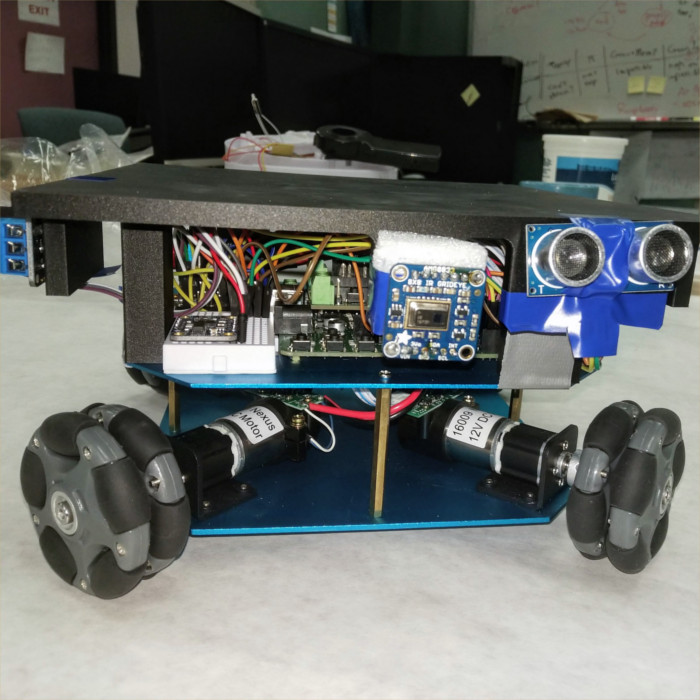

Thanks to a grant from the Massachusets Space Grant Consortium, I was able to work as an Aerospace Intern at NASA Ames Research Center in the Aeromechanics Division, which focuses primarily on rotorcraft applications and advanced design.
I was selected to be a group lead for the Helicopter Emergency and Rescue Operations (HERO) FireBot team which was comprised of myself and two other college interns. We also had a high school intern join for part of the project. The team was given the open ended task of creating a system concept for a drone that could help fight wild fires. To acomplish this, the team spent a lot of time brain storming and we utilized a variety of systems engineering methods such as trade studies and requirments verification matricies.
The final concept for FireBot was designed to combat spot fires, which occur when an ember crosses a fire line and starts a small fire. If left unchecked, a spot fire will grow and compromise the containment provided by the fireline. When a spot fire is detected, possibly by a different drone or similar system, FireBot would be deployed from its base station and fly to the GPS location of the spot fire. Once there, it would find the spot fire using thermal imagry and fire sensors, position itself near it, and deploy fire suppresant to extinguish it. Finally, FireBot would proced back to base to be recharged and refilled.
FireBot proof of concept robot chasis with electronics.
To demonstrate the feasibility of the concept, the team did extensive research. We looked into many problems such as how FireBot would be fly near a wild fire, how much suppressant it could feasibly carry, how it would deploy the suppressant, and more.
The team also built a ground based robot to demonstrate the concept. This proved to be a challenge due to our low budget in addition to a Federal Government IT policy change that caused a 1 month delay in component purchases. Nonetheless, we made the best of what we had and ended up with a working robot. The robot used a chasis with 4 omni-wheels which could emulate drone movement with the exception of pitch, roll, and heave. When powered on, it would drive to a set of preprogramed relative coordinates before searching for a heat source. Once located, it would approach and deploy suppressant before returning home. As the software specialist on the team, I wrote the majority of the firmware for the robot.
The team wrote a final report on the project which is freely availible from the link below.